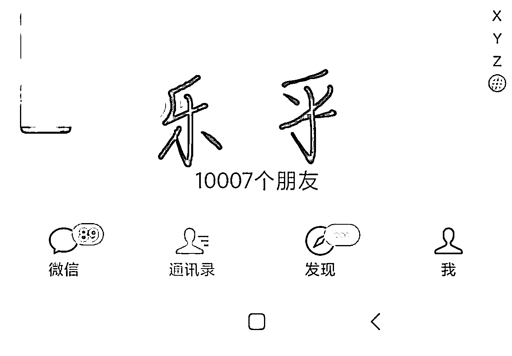
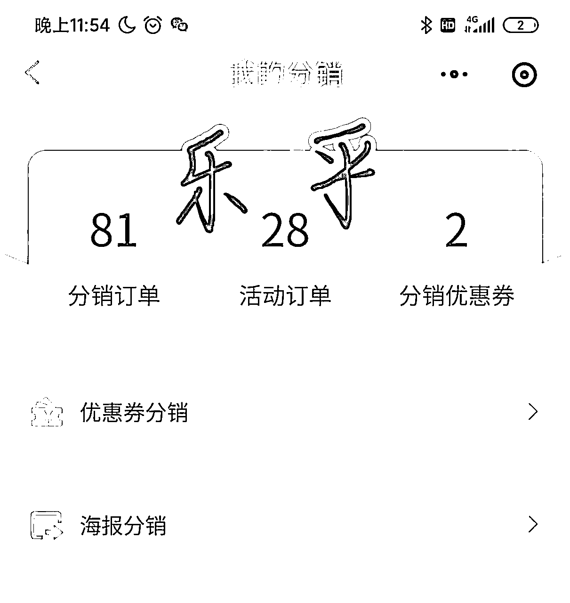
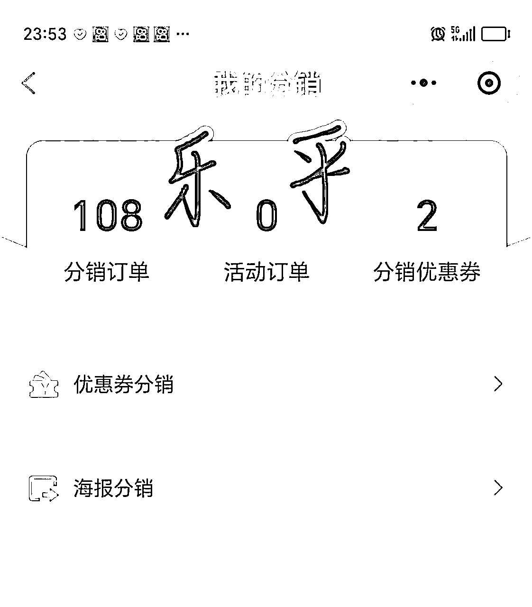
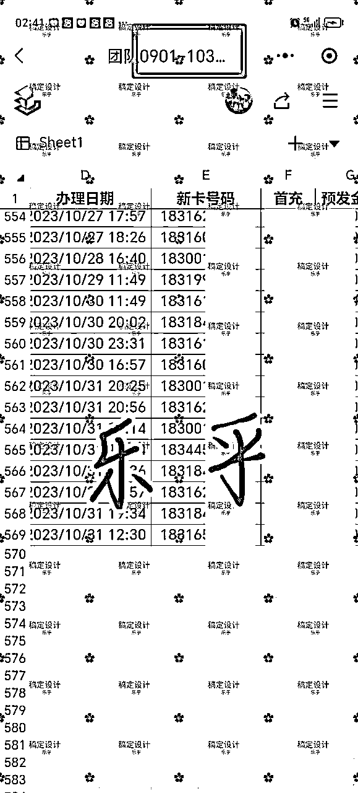
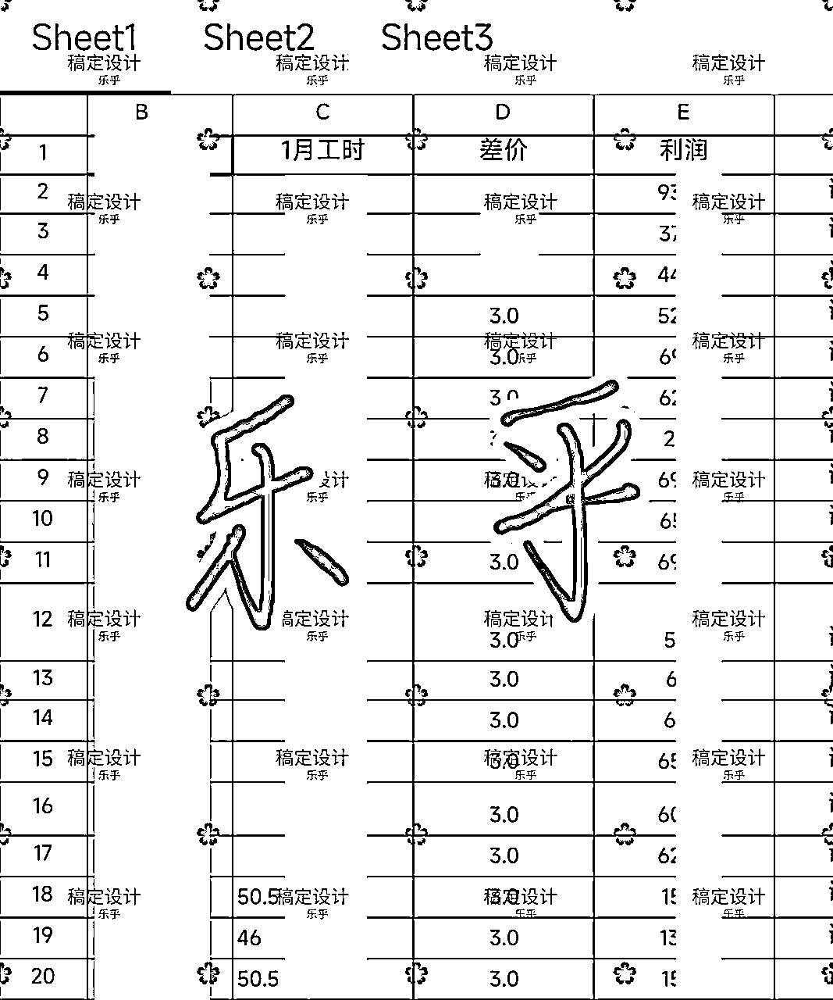
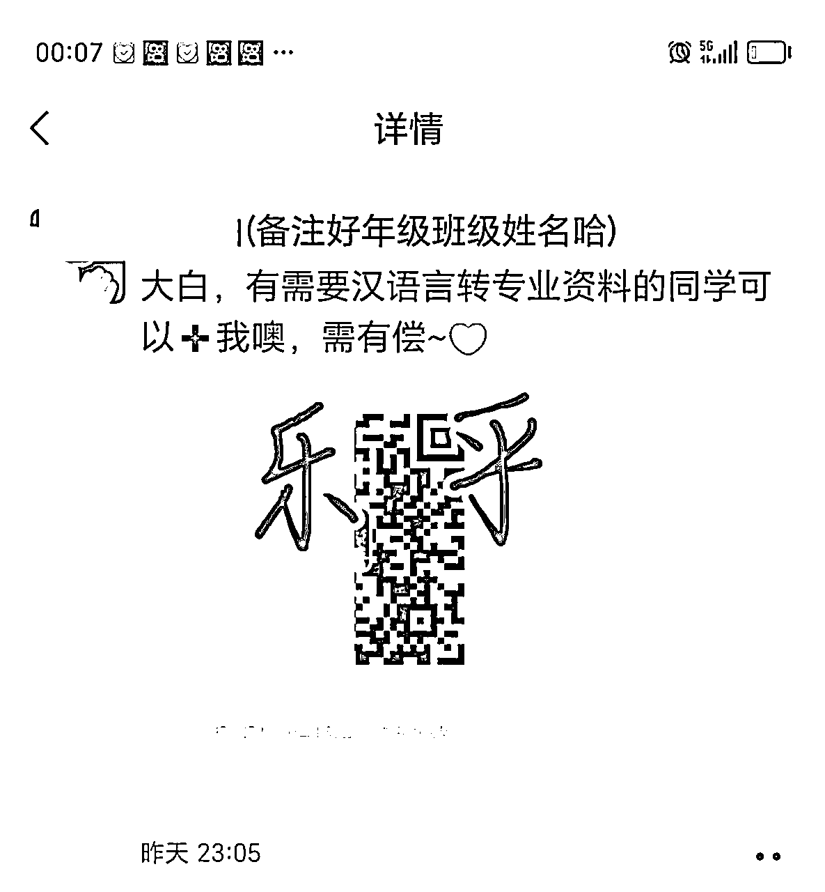
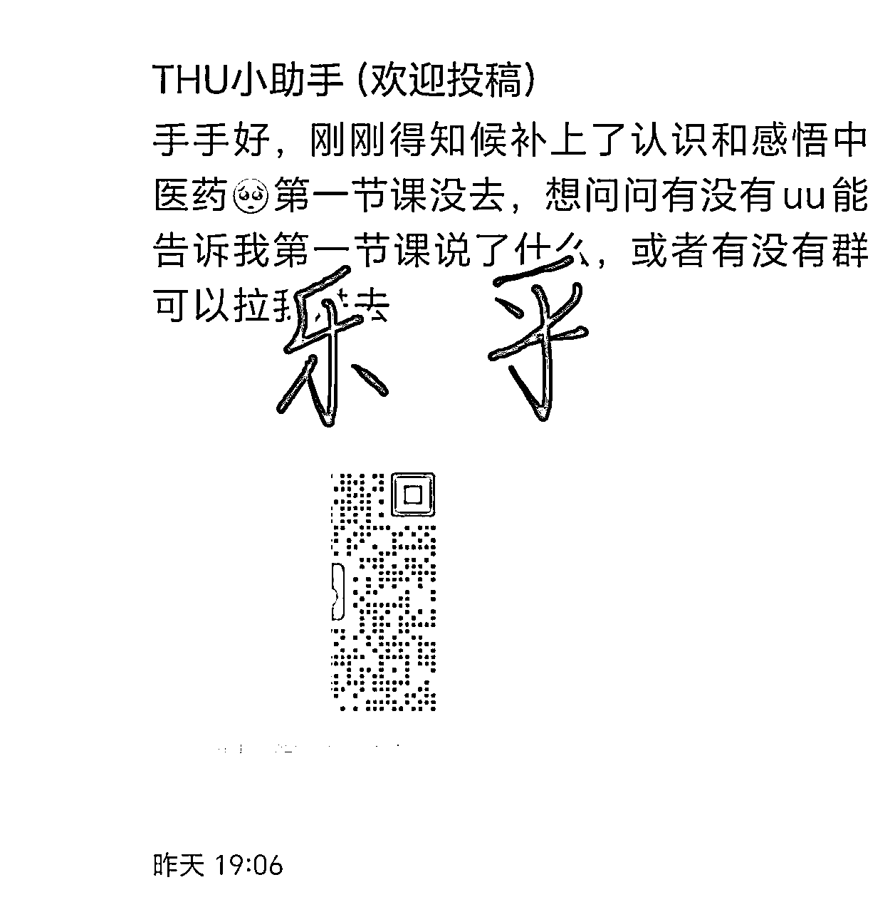
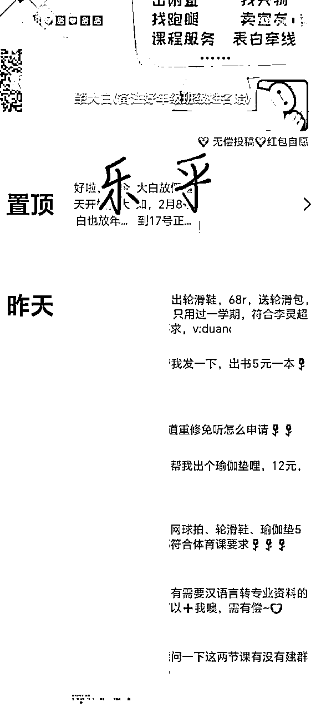
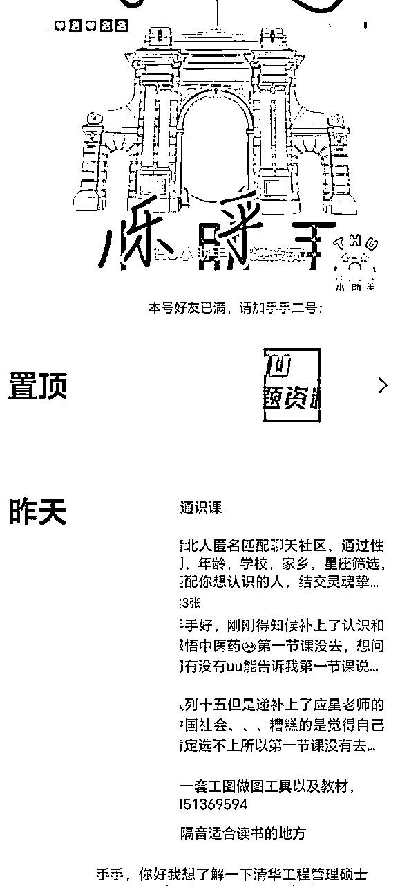

来源：https://hx0exm7xfp9.feishu.cn/docx/WGg5d1uMyoX6mtxDf1kcYZLBnLe
各位生财家人，大家好哇。我是生财上一年11月份的新人，刷了很多生财精华帖，很少看到校园市场该怎么做。现在的校园市场，其实主要是以校园墙/表白墙为校园流量池，分成多个业务来做。校园墙/表白墙，以下统称为校园墙。
在高校中，校园墙是学生的信息交流中心，学校的地下情报系统。一个万人的校园墙，变现是很恐怖的，基本上可以一年达到12万以上。校园墙是一个流量池，主要变现形式有发广告和做业务。发广告，就是周围商家和线上商家的推广。做业务，就是做驾校，电话卡，外卖，劳务，升学考公考研，留学等不同板块，根据不同学校的情况不同进行组合。
在校园中，校园墙是流量基础，广告是辅助，做业务是最后的变现目标。
先自我介绍一下，我叫乐乎，目前在多所高校建立自己的表白墙，其中以自己的母校为最大。母校校园墙一个主号，两个小号，主号一万人，两个小号各七千人，基本上覆盖了整所大学。上年通过广告变现三万多元，做业务变现超过20万。我的业务主要是驾校，电话卡，劳务。



招生一个是280～300元左右，我个人包括在门店报名的，有290个左右，团队有100个，总利润保底是10万元

移动校园卡1年，开学季开了569张，再加上平时的开卡量，一年总共超过800张，总利润超过7万元左右。

劳务一万多，大巴车推广和分销一万多。依靠校园墙，毕业一年总共收入超过22万。
那么，我是怎么做到的呢？以及我为什么很推荐还在读大学的同学，都要做校园墙呢？
高校现在的商业流量池，基本上集中在校园墙上，而且每所高校都有这样的校园墙，各自分开运作，出奇地分散。
校园墙的运营条件，非常简单，只要有一个正常使用的微信号，就可以做了。校园墙的工作，就是帮来投稿的学生，把他们的信息复制粘贴到朋友圈上，像是下面这样。




所以，校园墙的工作也比较简单，但是比较难的点是前期的起号工作。
一，起号工作。
起号是做墙号的重中之重，关系到能不能把这个墙墙号做起来。起号分为线上起号和线下起号，平时运营和关键时节点。
①线上起号。
在墙号还没起来前，还是一个普通的号时，这时候还没专属名称，就可以混进各种新生群，社团招新预备群，闲置群，跑腿群等。和群主说好自己的需求，需要打广告，一条给6～10元即可。广告语是：大家好，我是某某大学的万能墙，找兼职，寻物启事，捞人，表白，日常答疑，都可以找我投稿。再推送自己的名片。这样，比较容易积累到早期用户。
另外，可以在小红书，抖音建立墙墙专属名称，投稿校园信息和近期活动介绍，并吸引粉丝引流微信墙号。
②线下起号。
可以在各大宿舍楼，特别是新生宿舍楼，散发传单，吸引学生加你。
这个是平时的运营思路，运营好，积累好私域基础流量。到了开学季前，风口就来了。
③关键时节点。
在暑假高考放榜前那几天，开始线上运营，集中在小红书和视频号上。小红书/视频号开始发学校的风景照，地图，街景等，吸引关注这所学校的高考生。高考一放榜，马上根据以往的大概录取分数线，建立新生群。新生群，是非常好的吸引工具。所以，从高考放榜后，就建新生群。保持每天一条建群投稿，再加一条本校介绍。
从学校录取分数线出来后，开始做学院新生群建立，再加一条学校介绍。通过这种打法，能够把学校的新生资源，快速地集中到你的号上，这就是你的第一批流量池了。其中，也有很多老生，会通过各种途径加上你的号。这时候，基本上能够完成校园墙的起号工作，加到号上的好友，也有超过两三千人。
就算错过了暑假这段黄金时间段，开学的一周内，也是一个很好的起号阶段。这时候主要是雇佣兼职，到新生宿舍楼派发卡片和传单，让新生加上墙墙号了。这时候起号得当，兼职有额外的计酬奖励的话，也能够积累两三千人的校园墙，完成起号工作。
二，运营
起号后，下一步就是运营了。一个成功的运营，不仅能够把现有客户服务好，还能利用现有客户去进行裂变。
方法一，在同学们过来投稿时，询问他们是否愿意帮你发一下朋友圈。一般有来你这里投稿的同学，会有比较多的同学不好意思拒绝你，所以你能完成第一阶段的扩列。这一步做得好，可以把好友量扩充到三四千人，再一步增强在学校的影响力。这时候保持正常运行，也能接推广了。
方法二，墙墙发布活动。通过开学季/校庆送学校纪念钥匙扣/指环的活动，进行裂变。一般墙墙会在朋友圈发布这样的海报（可用便签做成，上面加上二维码），转发本条信息到3个微信群超过200人的本校群，超过3分钟后截图，或者转发到朋友圈24小时，可以免费领取一个印有学校校徽的钥匙扣。这样一条朋友圈，通常能够引起同学们的大量转发，陈俊腾同学（广州大学城校园墙大佬，有20多个墙）试过，一个号一天可以引流超过900人。这样，顺利的话，再加上前期的起号积累，也能够把墙墙号运营到四五千人。
三，扩大好友量与打广告
以上方法，基本上完成了校园墙起号，到扩大好友量的阶段。这时候进入正常运营阶段。在不违背法律法规，校规校纪的情况下，学生的投稿可以免费投（有些校园墙可能会收取1～2元手续费），通常有一个桃色事件，年级骂战（之前试过因为体检插队问题，各大院系对骂，一下子来了四五百人）或渣男渣女事件，就能吸引来一大批人。这时候，并不用担心流量问题。同时，还可以接广告，进行变现。各种各样的广告，只要不违法违规，都可以试着做一做。一下子来包校园墙一个月的广告的业务，要特别注意。一般适合学生做的高额业务，不在乎驾校，劳务，电话卡，考公考研，家教平台，外卖平台，健身房课程这些。
四，做业务
下一阶段，做业务。选取少数符合自己学校特色，佣金高的业务，自己建立小号引流来做。比如我们学校，比较适合做驾校，电话卡。这两块，是我一年里比较出成绩的业务，变现超过17万。
1，驾校
墙墙号做大后，可以直接找学校附近的驾校招生部经理谈合作。切记，不要找校园代理，不然你的等级会在很多人之下。直营驾校的招生价格一般在250～350元之间，会有招生等级奖励。挂靠驾校招生价格拿底价，一般有400～500元利润，但是可能报名的学生会被多收几百元踩点费用。
①墙墙招生方法。我一般是通过改革，涨价，设定一个时间点，再进行倒计时。时间一临近，逼单量会比较明显。
②小号添加好友。在各种大学群，用小号添加好友。到寒暑假时，进行促销预报名活动，通常能够锁定一大批名额。这种添加好友的形式，被我同学一个招生团队发挥到极致，他们甚至招起一支学生队伍去做。有大量学生资源的墙墙号，也能这么做。
2，电话卡
做电话卡，首先跟区域的经理谈合作，尽量能够争取到每张佣金在80元以上。
然后开始在墙墙号上招募团队成员和发开卡广告，在开学季时，尽量能够让团队成员坐进报道摊位里，再给团队成员设置开卡佣金。我们是这样的，拿到80元以上的开卡佣金。给团队成员设置开卡阶梯奖励。1～5张 25元；6～10张 30元；11～15张 35元；16～20张 40元……涨到50元每张为止。目前校园卡团队有33人，一年开卡800张，基本上占了学生开卡人数大概35%的份额。
最后总结
校园市场，千变万化，都离不开一个流量池子，内部平台。在校园市场深耕3年的我，希望这篇文章能够帮到想要做校园市场的创业者。但是要说，单个校园市场，容量会比较小，基本上一年变现不会超过20万，天花板有限。而且起号完成后，投稿量会比较多，事情琐屑烦忙。再加上自己要做业务，基本上是处于半全职的工作了。坏处有很多，但这是一份很有意义的工作，一来同学们会比较敬重你，因为你总能帮他们发投稿，答疑解惑；二来也比做兼职强，到食堂，快递站上工作，一个小时10～15元，不如做校园墙来得舒坦，赚得钱也多，起号完成后，一天赚300～500元都不会很难。所以适合还没找到工作，或者工作比较清闲的人去做，包括大学生，宝妈，学校后勤人员，行政老师等。做这个墙墙还有一个好处，就是可以比较快地感知到社会革新，一旦有新事物在社会上准备出现，总会比较快地传播到大学里。而校园墙，作为学校的信息中心，通常会比较容易把握到机遇。这也是我鼓励所有生财在校大学生去做墙墙号的重要原因了。